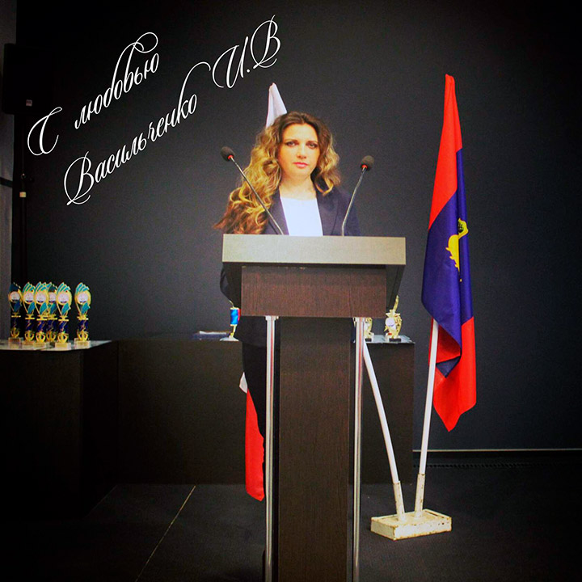

На сайте раскрыт подход по формирование устойчивого интереса детей дошкольного возраста к культурному наследию народов проживающих на территории Российской Федерации. Воспитанию культуры мира и межнационального согласия у детей дошкольного возраста, рассматривается актуальность темы нравственного и патриотического воспитания дошкольников.
Описывается педагогический опыт, который, раскрывает содержание работы по данной теме, приводятся примеры организационно-педагогической работа с педагогами, родителями, организационно-образовательной работы с детьми, организационно-просветительская работа с социальными партнерами.
Выстроена форма взаимодействия с органами муниципальной власти и общественными организациями:
- Начальник управления по вопросам внутренней политики администрации Костромской области-Ерин Максим Александрович
- Заместитель главы Администрации города Костромы- Воронина Ольга Владимировна
- Костромской дом национальностей
- Всероссийским благотворительным фондом «Достойная память» Генеральный директор-Анжела Илларионовна Скрипкараш.
- Костромская городская общественная организация «Ассамблея народов Костромы» председатель Бабаев Камран Насруллаевич
- КООО «Многонациональная Кострома» председатель Бабаев Камран Насруллаевич
- Костромская региональная общественная организация «Молдавская община» заместитель председателя Курилова Зоя Васильевна
- Костромская городская общественная организация «Азербайджанский культурный центр», руководитель: Саттарова Эльза Гаджикерим Кызы.
- Костромская городская общественная организация «Татарский культурный центр»
- Областное государственное бюджетное профессиональное образовательное учреждение «Костромской политехнический колледж» Директор: Смирнов Вячеслав Анатольевич
- Федеральное государственное бюджетное образовательное учреждение высшего образования "Костромская государственная сельскохозяйственная академия". Ректор Зудин Сергей Юрьевич
- Заведующий отделом культуры туризма, спорта и молодежи администрации Красносельского муниципального района, Елена Александровна Лебедева, Главный специалист по культуре отдела культуры, туризма, спорта и молодежи администрации Красносельского муниципального района Светлана Владимировна Вохмянина.,
- Туристический комплекс Русиново, Анна Алексеевна Шабалдина.
- Военно-исторический отдел Костромского историко-архитектурного и художественного музея-заповедника. Матюшкин Андрей Васильевич.
- Муниципальное бюджетное общеобразовательное учреждение города Костромы "Средняя общеобразовательная школа № 30". Заместитель директора по воспитательной работе Котанова Мария Юрьевна.
- Комитет по делам молодежи Костромской области, Костромской госуниверситет, ОГБУ «Молодежный центр «Кострома».
Руководитель и ответственный за реализацию образовательных проектов ДОУ : Васильченко Инна Викторовна.
